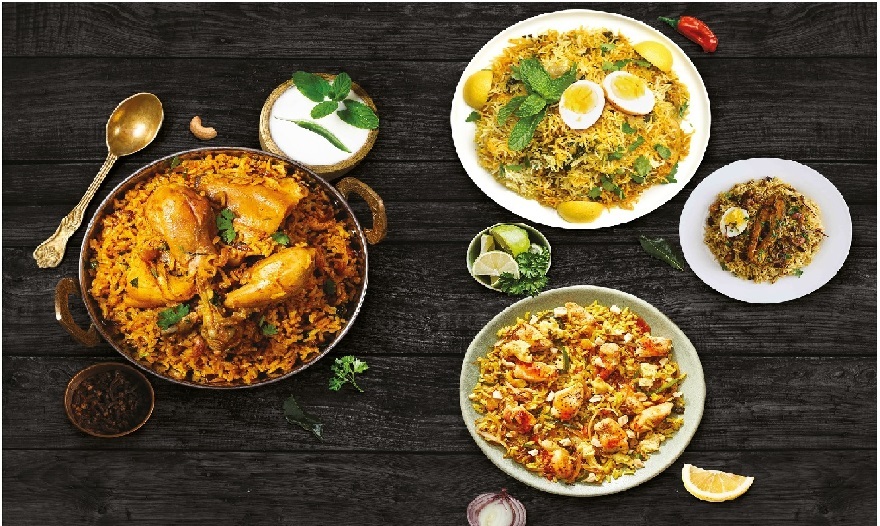

India food like its culture is varied and is quite popular across the world. Indian food is the blend of varied herbs and spices which make every dish quite unique and special. Though most of the countries love Indian food, it is considered to be quite spicy when compared to the other cuisines.
Most of them when they think of Indian food, all they can think of is the wide variety available. Be it the sweets or the rice dishes or the curries or the snacks, Indian cuisine has it all. Indian food is delicious and quite exciting and includes the use of various exotic flavors. Also, another thing that pops up in our mind when we think of Indian cuisine is the wonderful spices that are used in cooking.
Let us now learn a little more about Indian food, which the favorite of many around the world.
Indian food is wide and includes a lot of variety. Each state of India has its own unique cuisine that reflects the culture and their tradition. Indian food is cooking using various methods, most of which preserve the nutrients contained in the fresh vegetables used. Traditional way of cooking Indian food includes making everything from the scratch.Indian food is mostly free from preservatives. This way you get all the nutrients you need. Indian cooking also makes use of a number of herbs that are very good for human health. Some of the herbs include turmeric, ginger, and garlic and so on. Indian food also makes use of yogurt, which is fermented milk, which is again helpful in preserving healthy bacteria. Indian food not only tastes good, but is also quite healthy.
Now that we have learned about Indian food, it is time you try out various cuisines and let us know which his your hot favorite.Useful links:Visit our "Yashvik Food" Youtube channel now!
Visit our "Yashvik Food" Facebook page now!
Visit our "Yashvik Food" Instagram page now!
